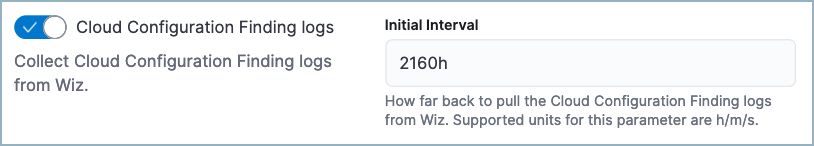
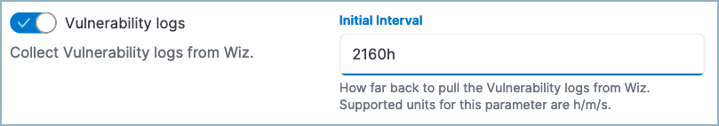
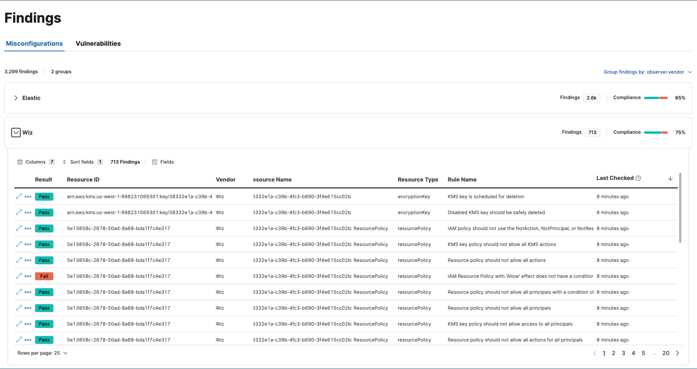

Ingest Wiz data
editIn order to enrich your Elastic Security workflows with third-party cloud security posture and vulnerability data collected by Wiz:
- Follow the steps to set up the Wiz integration.
- Make sure the integration version is at least 2.0.1.
-
Ensure you have
readprivileges for the following indices:security_solution-*.misconfiguration_latest,security_solution-*.vulnerability_latest. -
While configuring the Wiz integration, turn on Cloud Configuration Finding logs and Vulnerability logs. We recommend you also set the Initial Interval values for both settings to
2160h(equivalent to 90 days) to ingest existing logs.


After you’ve completed these steps, Wiz data will appear on the Misconfiguations and Vulnerabilities tabs of the Findings page.

Any available findings data will also appear in the entity details flyouts for related alerts. If alerts are present for a user or host that has findings data from Wiz, the findings will appear on the users, and hosts flyouts.